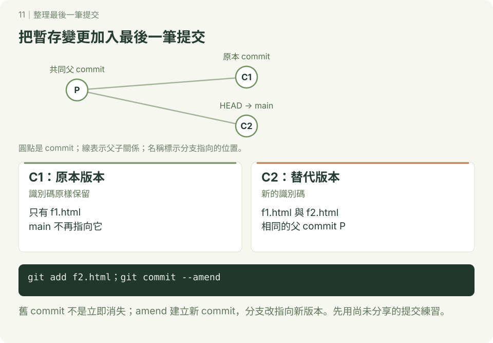

整理最後一筆提交：amend
剛提交後才發現訊息寫錯，或漏掉一個應該一起提交的檔案，可以用 git commit --amend 整理最後一筆提交。本章先練習尚未分享的提交；已共享的歷史，優先新增修正提交。請先熟悉暫存區與 commit。
1. amend 會做什麼？
amend 會建立一筆替代提交，並將目前分支移到新提交。一般情況下新舊提交的識別碼不同，原提交並非被直接修改；如果其他分支或標籤仍指向原提交，它仍然存在。amend 會包含目前暫存區的內容，因此先看 git status 與 git diff --staged。

2. 案例一：修正提交訊息
本章練習互相接續。已設定提交身分後，使用 macOS／Linux 終端機或 Windows Git Bash，在新的練習位置開始；amend-demo 不可已經存在。
mkdir amend-demo
cd amend-demo
git init -b main
printf 'Project notes\n' > README.txt
git add README.txt
git commit -m "建立專案起點"
printf 'Home page\n' > index.txt
git add index.txt
git commit -m "新增首夜"
git log --oneline -1
git status --short記下顯示的識別碼，確認 status 沒有輸出，再修正訊息：
git commit --amend -m "新增首頁"
git log --oneline -1
git show --stat HEAD預期最新訊息變成「新增首頁」，識別碼與剛才不同；檔案內容不變。main 仍只有起點與首頁兩筆提交，因為新提交取代了分支原先指向的記錄。
3. 案例二：補入漏掉的檔案
操作位置仍在 amend-demo。假設剛提交說明文件，才發現同一項功能的聯絡資訊還沒加入：
printf 'About our team\n' > about.txt
git add about.txt
git commit -m "新增團隊介紹"
printf 'Contact us\n' > contact.txt
git add contact.txt
git diff --staged
git commit --amend --no-edit
git show --stat HEAD
git status --short最新提交應同時包含 about.txt 與 contact.txt，訊息仍是「新增團隊介紹」，工作區乾淨。--no-edit 沿用訊息；它仍會把所有已暫存變更放進替代提交。
4. 案例三：已分享後發現錯誤
假設第二個案例的提交已經推送並被同學使用；為了避免改寫同學依賴的歷史，接續新增修正提交。本練習不需要連線，僅模擬已分享的情境：
printf 'Contact: team@example.invalid\n' >> contact.txt
git add contact.txt
git commit -m "補充聯絡方式"
git log --oneline -3歷史保留「新增團隊介紹」，另有一筆「補充聯絡方式」。這讓同學可以正常取得新提交。團隊有時會約定改寫個人遠端分支，但必須先理解影響並與使用該分支的人協調；不要對共享分支直接強制推送。
5. 換你做
在 amend-demo 新增 news.txt 並提交，記下識別碼；修正該檔案、重新 add，使用 git commit --amend --no-edit，再用 git show HEAD 確認新內容。回答：為什麼識別碼改變？為什麼執行 amend 前要檢查暫存區？
答案：amend 建立替代提交；暫存區中其他已準備的修改也會一起被納入。要整理更早的提交，參考互動式 rebase。
參考：git commit 官方文件。